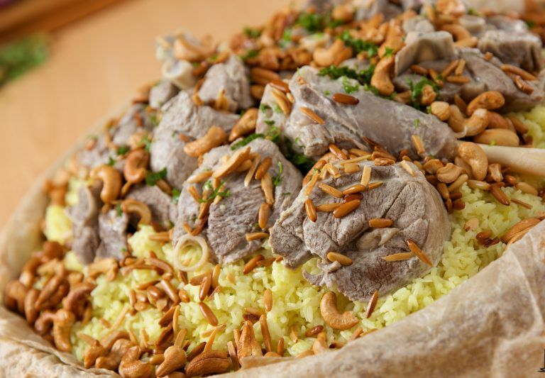

Mansaf

Description
Ask just about any Jordanian what food you have to try when you visit
Jordan, and you’re pretty likely to hear mansaf as the top answer. Mansaf
is a dish of rice, lamb, and a dry yoghurt made into a sauce called
jameed. It’s not only one of the the most beloved Jordanian foods, but
it’s also considered the national dish of Jordan.
How is Mansaf traditionally eaten in Jordan?
If you really want to experience Mansaf authentically, then put away your
knife and spoon and roll up your sleeves. Jordan Mansaf is traditionally
eaten with your right hand while the left hand is behind your back. This
is so you don't get confused as to what hand you are suppose to be using.
There is actually an art to tearing off a piece of meat, rolling it in the
Jameed sauce and rice and creating a ball. Carefully drop it into your
mouth without your hands or fingers touching your mouth. It is perfectly
acceptable to use a spoon, but give it a go the Jordanian way and see how
you do!
Ingredients
- Shrak or Tortilla bread
- Rice (Short grain rice)
- Lamb meat
- Liquid Jameed
- yoghurt
- Ghee
- Onion
- Ghee
- Onion
- Garlic
- Corn starch
- bay leaves
- Black ppeper
- Cinnamon
- Tumeric
- Salt
Steps
-
Fill a deep pot with water and bring to a boil. Add meat and wait for
the water to boil again.
-
Let the meat boil with water for 5 minutes then take the meat pieces out
and dump the water.
- In the same pot melt 2 tablespoons of ghee then add onions.
- Sauté for a couple of minutes then add the spices.
- Add the meat cubes and brown for about 5 minutes.
-
Cover with hot water and bring to a boil. Reduce heat and simmer until
done. This will probably take about 75 minutes.
-
In a pot melt ghee and then add rice. Stir rice until the rice grains
are covered with ghee. Mix in turmeric and salt, then pour in water.
- Bring to a boil, reduce heat, cover and cook until done.
-
When the meat is done start making the Jameed sauce. In a bowl add
yogurt and sprinkle with cornstarch. Mix the cornstarch in using a
whisk. Pour in the liquid Jameed (soup starter) and whisk well.
- Then mix in about 1 ½ cups of the meat broth.
-
In a pot over medium heat melt ghee, then sauté garlic for just 30
seconds. Pour in the Jameed mixture whisking everything well and bring
to a boil.
-
Add in cooked meat. Taste and season to your liking. Let everything cook
together for about 10 minutes over medium heat.
-
Right before serving assemble the dish. In a big platter arrange the
bread.
- Ladle some of the Jameed sauce on top.
- Spread the rice over the bread.
-
Place lamb meat on top of the rice. Ladle some more Jameed sauce over
and sprinkle top with toasted almonds and chopped parsley.
Serve With
Mansaf is served on a large platter with Shrak bread on the bottom to soak
up the rich tasting Jameed yogurt sauce soon to be poured on top. After
assembling Mansaf, be sure to save any extra Jameed sauce for dipping.